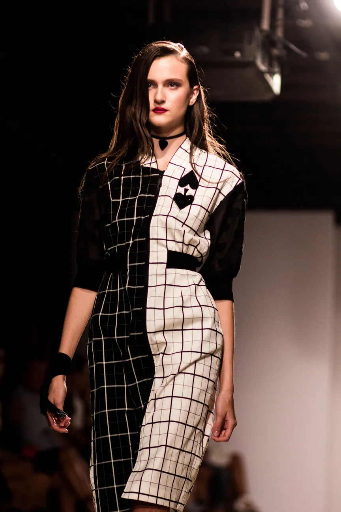
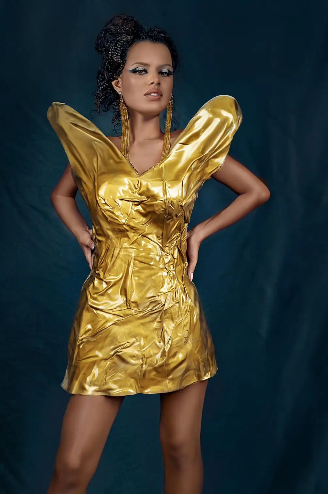
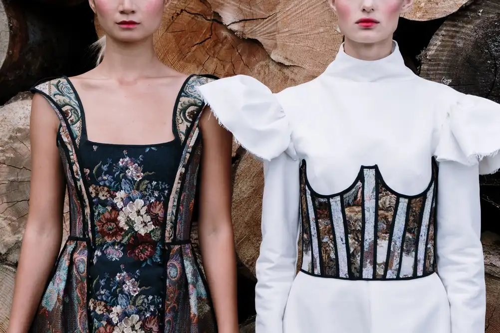
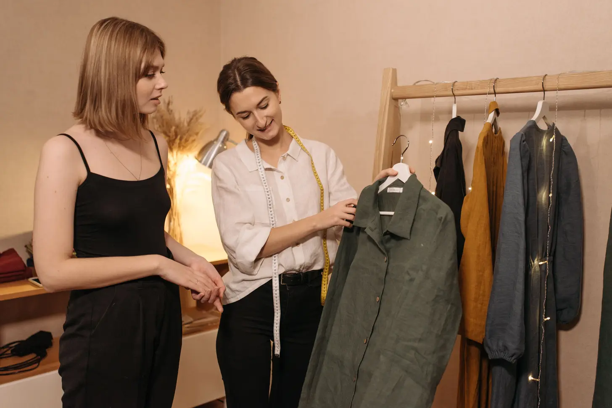
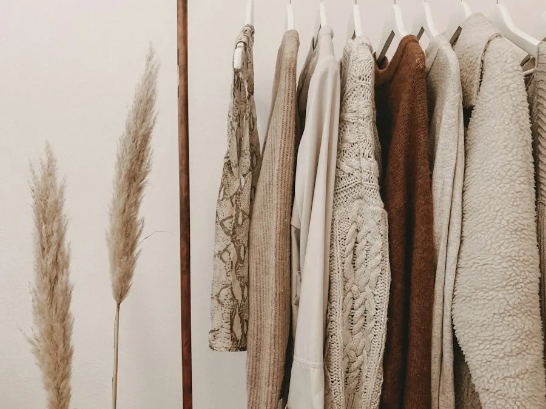
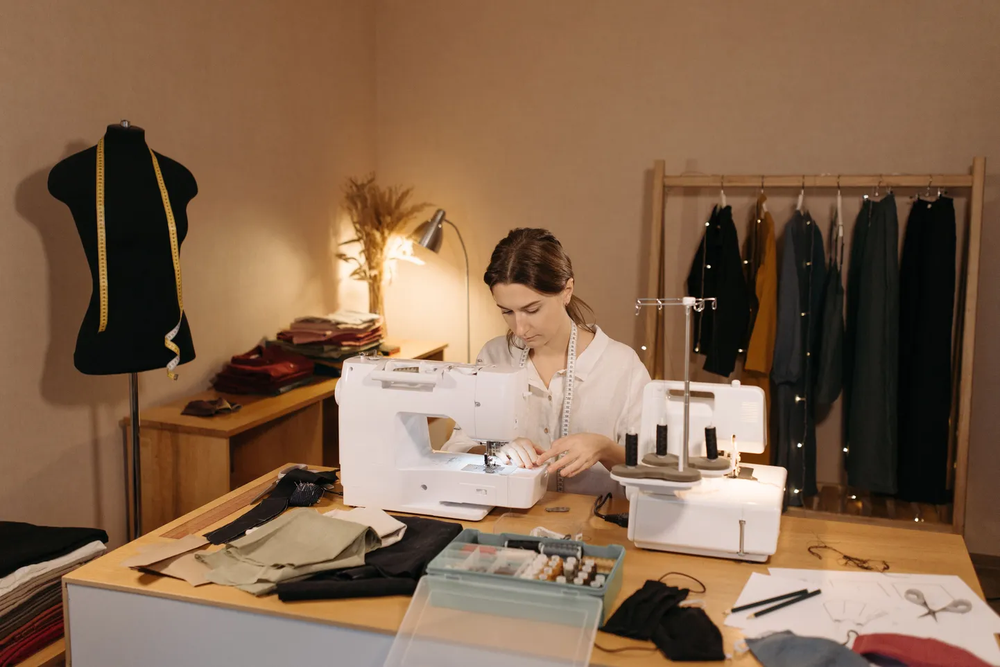
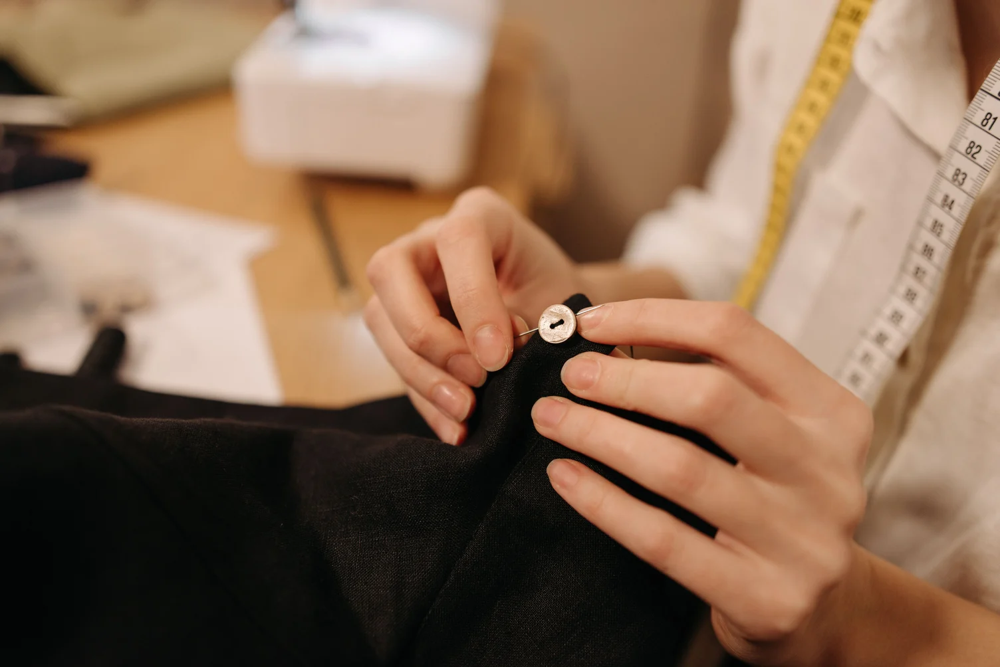
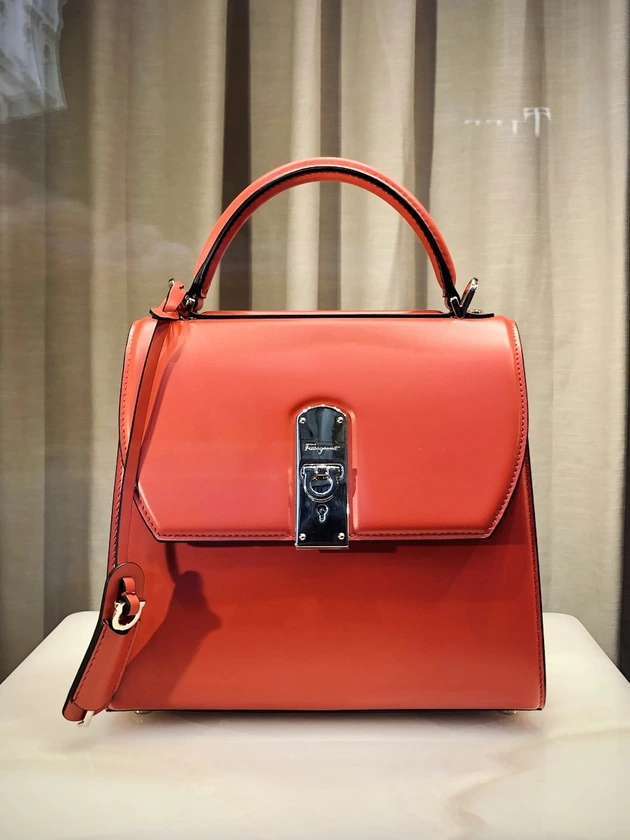
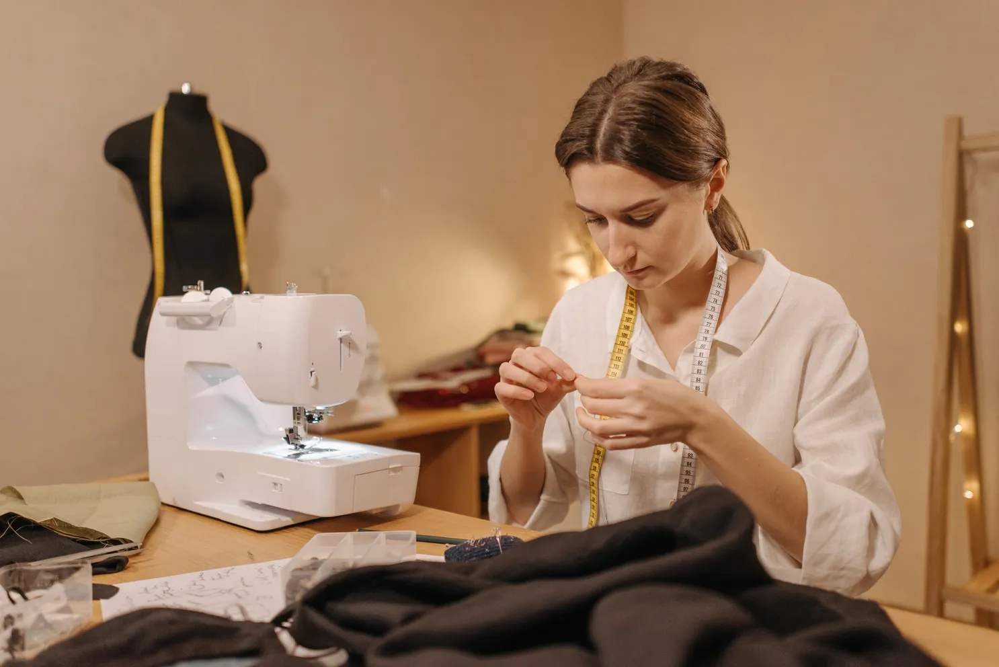

Couture Craft & Design Services
From heirloom bridal gowns to runway creative direction, we offer architectural fashion engineering tailored to your exacting silhouette.
Our Atelier Specializations
Explore our signature sartorial offerings, marrying ancient Tamil Nadu handloom heritage with avant-garde French draping engineering.
Bridal & Gala Couture
One-of-a-kind wedding gowns and regal gala silhouettes sculpted with Ahimsa silks and 24K zardozi embroidery.
- 3 private fittings at Salem atelier
- Calico muslin toile prototype fit
- Personalized veil & heirloom monogram

Runway Direction
Complete runway creative direction from moodboards and silhouette grading to catwalk lighting and choreography.
- 12 to 36 look complete capsule lines
- Tech-packs & production specs
- Model casting & catwalk staging
3D Garment Prototyping
Zero-waste digital cloth simulations in Clo3D, testing tension, bias stretch, and draping on custom client 3D avatars.
- 80% reduction in fabric sample waste
- 360-degree virtual fit video renders
- Digital fashion CAD exports

Red Carpet Styling
Statement silhouettes engineered for high-intensity camera flashes, step-and-repeat press backdrops, and awards galas.
- Anti-wrinkle luxury interlinings
- On-site standby master tailor
- Custom accessory & jewelry pairing

Ethical Handlooms
Custom jacquard and brocade silks commissioned directly with historic master weavers across Salem artisan guilds.
- 100% cruelty-free certified Ahimsa silk
- Natural mineral & herbal dyes
- Certificate of artisan provenance

Sartorial Tailoring
Hand-cut, floating horsehair canvas suits and tailored jackets built according to timeless Savile Row sartorial standards.
- Floating horsehair canvas chest piece
- Hand-sewn horn buttons & Milanese lapel
- Lifetime complimentary fit tune-ups
The 6-Step Couture Journey
From initial anatomical calibration to museum-grade archival boxing, discover the rigorous 6-phase journey of each bespoke Stackly heirloom silhouette.

Anatomical Ideation
01Private 90-minute bespoke consultation analyzing posture, skin tone harmony & gala occasion lighting.
Biometric Calibration
Detailed 38-point biometric measurement charting skeletal balance, movement reach, and custom mannequin calibration.
- 38-point anatomical precision blueprint
- Occasion venue lighting & posture audit
- Curated sensory moodboard direction

Sketch & Swatch
02Hand-painted French gouache fashion renderings paired with tactile Ahimsa silk swatches and bullion samples.
Gouache & Weave Selection
Three distinctive silhouette silhouettes rendered in watercolor gouache with physical sample swatches from Salem silk guilds.
- 3 bespoke artistic silhouette variations
- Physical Ahimsa silk touch capsule sent to client
- Custom mineral dye swatch sign-off

Muslin Toile Fitting
03Raw calico muslin prototype draping directly on body to engineer kinetic ease, neckline fall, and bias balance.
Muslin Prototype Fit
Zero-risk fit verification cut in unbleached calico to sculpt proportion, sleeve mobility, and seam architecture to sub-millimeter precision.
- Calico unbleached test toile construction
- Armscye, pitch, and posture pin adjustment
- Master pattern flattened to precision paper sloper

Heritage Loom Weave
04Commissioned pit-loom weaving of single-batch Ahimsa mulberry silk with bespoke zari borders in Salem.
Artisan Pit-Loom Craft
Direct commission with 4th-generation master weavers using wooden pit-looms, certified cruelty-free cocoons, and vegetable dyes.
- Exclusive single-bolt jacquard weave run
- 100% certified cruelty-free Ahimsa mulberry silk
- Traditional temple border interlocking technique

Zardozi & Embroidery
05Over 120 artisan needlework hours applying 24K bullion wire, seed pearls, and French micro-knot motifs.
Bullion Zardozi Art
Stretched over slate timber addas, karigars hand-stitch micro metallic tubes, antique dabka, and heirloom beads with tambour needles.
- Pure silver-gilt bullion wire & dabka
- Micro-beading & Luneville tambour technique
- Hidden internal canvas reinforcement for weight
Archival Delivery
06Final VIP fitting review, heirloom trunk casing, cedarwood protection, and serialized artisan provenance seal.
Archival Presentation
Comprehensive fitting sign-off, garment placement in acid-free museum casing, accompanied by handcrafted provenance documentation.
- Museum-grade acid-free archival storage bag
- Serialized wax-sealed certificate of provenance
- Lifetime complimentary fit adjustment warranty
Bespoke Commission Packages
Tailored Separates
Ideal for bespoke tailored suiting, smoking jackets, and contemporary occasionwear.
- Pure cashmere or silk-wool blend
- Full floating horsehair canvas
- 2 fittings (Atelier or Virtual)
- Turnaround: 3 to 4 weeks
Haute Couture Bridal
Complete royal wedding ensemble or red carpet couture gown with heirloom embroidery.
- Pure Kanchipuram Ahimsa silk
- 180+ hours hand zardozi & crystals
- 3 atelier muslin toile fittings
- Dedicated stylist on wedding day
- Turnaround: 6 to 8 weeks
Runway Capsule
Full creative direction, tech pack engineering, and runway staging for luxury brands.
- 16 bespoke cohesive runway looks
- 3D digital cloth CAD files (Clo3D)
- Factory production liaison & review
- Turnaround: 10 to 12 weeks
The Three-Stage Private Consultation
Experience personalized haute couture craftsmanship through our time-honored European fitting ritual adapted for contemporary royal patrons.
Salon De Muslin
Comprehensive 38-point anatomical measurement and preliminary calico toile construction to sculpt the silhouette to your exact posture.
- Custom wooden dress form calibration
- French calico unbleached test toile
- Posture and movement tension mapping
Textile Archive Curation
Private tactile exploration inside our Salem silk vault. Select handloom Ahimsa counts, antique silver bullion threads, and custom dye pantones.
- 100% cruelty-free mulberry Ahimsa silk
- Zardozi embroidery motif customization
- Bespoke herbal vat dye swatches
Final Revelation & Seal
The culminating salon presentation with private champagne service, micro-tailoring adjustments, and signed Certificate of Couture Authenticity.
- Millimeter hemline and train balancing
- Archival preservation garment trunk
- Lifetime complimentary seamstress care
Frequently Asked Questions
Answers to common inquiries regarding bespoke timelines, international consultations, and sustainable couture commissions.
Need Sartorial Guidance?
Our Salem atelier director is available for discreet phone and video consultations to answer technical and timeline questions.